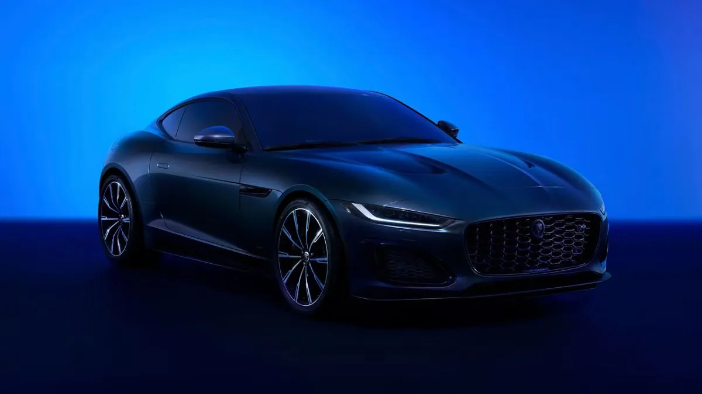

La producción del Jaguar F-TYPE ha llegado a su fin, marcando el cierre de un capítulo significativo en la historia automotriz
La despedida de uno de los deportivos más emblemáticos de Jaguar está aquí. El F-TYPE, con su elegante diseño y su potente rendimiento, se retira de la producción, dejando una huella imborrable en el mundo automotriz.

Con la edición especial lanzada en 2022, ya sabíamos que este momento llegaría, y ahora es oficial: el último Jaguar F-TYPE ha salido de la línea de producción.
Este F-TYPE final no es cualquier automóvil; es una pieza de coleccionista que rinde tributo al icónico E-Type con su pintura especial y un interior de lujo personalizado.
JAGUAR
El exterior del coche está terminado en Giola Green con una capota negra, mientras que el interior está forrado en piel Windsor color canela, evocando el diseño del último E-Type de 1974.
Más allá de ser una despedida para el modelo, este evento también marca el fin del icónico motor 5.0 V8 sobrealimentado de Jaguar. Este motor, en su configuración para el F-TYPE, produce 450 caballos de fuerza, aunque en su versión SVR alcanzaba hasta los 575 CV.
Con el cese de la producción del F-TYPE, también decimos adiós a este motor V8, ya que Jaguar se encamina hacia un futuro completamente eléctrico.
A partir del próximo año, Jaguar solo producirá vehículos eléctricos, con un GT sin emisiones planeado como el primer modelo de esta nueva era.
Este cambio refleja un movimiento significativo en la industria automotriz hacia la sostenibilidad y la reducción de emisiones.
El destino de este F-TYPE tan especial no es un garaje privado, sino el Jaguar Daimler Heritage Trust en el Reino Unido.
Este fondo, establecido en 1983, conserva y celebra la rica historia de Jaguar y Daimler, albergando una colección impresionante de modelos exclusivos que datan desde finales del siglo XIX.
Antes de concluir la producción del F-TYPE, Jaguar lanzó varias ediciones especiales, incluyendo las series 75 y ZP.
La serie ZP, limitada a solo 150 unidades, también rinde homenaje al E-Type, al igual que la edición Heritage 60 de 2020 con su distintiva pintura Sherwood Green.
En sus diez años de producción, Jaguar vendió 87.731 unidades del F-TYPE, superando al E-Type en 15,000 ejemplares.
La ausencia del F-TYPE deja un vacío en el mercado de los deportivos, y el Porsche 911 perderá un competidor formidable.
Este último F-TYPE es más que un coche; es un símbolo del legado de Jaguar y de la evolución de la industria automotriz.
Mientras celebramos su historia, también miramos hacia un futuro donde la innovación y la sostenibilidad serán las nuevas fuerzas impulsoras.